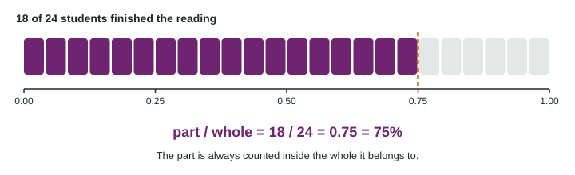

Fractions, Decimals and Percents
A part of a whole is the part divided by the whole, a decimal from 0 to 1, and a percent is that decimal times 100.
Part 1 · Hook
Why this matters
Part 2 · Prerequisite check
Quick check before you start
1. A class records each student’s number of siblings. What kind of variable is that?
- Quantitative and discrete
- Categorical
- Quantitative and continuous
- A parameter
Show the answer
A count of siblings takes whole-number values, so it is quantitative and discrete.
- Correct: Quantitative and discrete:
- Categorical:
- Quantitative and continuous:
- A parameter:
2. A school asks 50 of its 900 students about lunch. What is the population?
- The 900 students
- The 50 students
- The lunch menu
- The students who answered yes
Show the answer
The population is the whole group the question is about.
- Correct: The 900 students:
- The 50 students:
- The lunch menu:
- The students who answered yes:
Part 3 · See it
See it first

Part 4 · Step by step
How it works, step by step
- Find the whole the question names ("of the sport players")that number goes on the bottom of the fraction
- Count the part inside that wholethat number goes on top
- Divide the top by the bottomthe decimal is between 0 and 1; times 100 gives the percent
Part 5 · Key ideas
Key ideas
- A part of a whole is the part divided by the whole: . The result is a decimal from 0 to 1.
- A percent is a decimal times 100: . To go back, divide by 100.
- The whole is the group the question says "of": "what part of the sport players" tells you to divide by the number of sport players.
- Compare groups of different sizes with decimals or percents, not counts.
Part 6 · Misconception
A common mistake
The wrong idea: School B has more walkers, 25 against 18, so a larger part of school B walks.
What actually happens: School B is also bigger. As parts of their own wholes, and , so a larger part of school A walks.
Part 7 · Check yourself
Check yourself
Exam-style questions. Anything you miss goes into your review queue.
1. In a reading group, 18 of the 24 students finished the book. What part of the group finished, as a decimal?
Type a number. A table answer and a calculator answer are both accepted.
Show the answer
Part over whole: , which is 75% of the group.
- Answer: 0.75
2. Which decimal and percent equal ?
- 0.38 and 3.8%, rounding the decimal first
- 0.375 and 37.5%
- 2.667 and 266.7%, from dividing 8 by 3
- 0.38 and 38%, the same as 38 out of 100
Show the answer
- 0.38 and 3.8%, rounding the decimal first: The decimal 0.375 is 37.5%, not 3.8%: a percent is the decimal times 100.
- Correct: 0.375 and 37.5%: Right: 3 divided by 8 is 0.375, and moving the decimal point two places gives 37.5%.
- 2.667 and 266.7%, from dividing 8 by 3: That divides 8 by 3. A fraction is the top divided by the bottom: 3 ÷ 8.
- 0.38 and 38%, the same as 38 out of 100: Close after rounding, but the exact values are 0.375 and 37.5%.
3. What is 45% of 300?
- 13,500
- 6.67
- 165
- 135
Show the answer
Change the percent to a decimal and multiply: .
- 13,500: Multiplying by 45 instead of 0.45 makes the answer 100 times too big.
- 6.67: A percent of a number is a multiplication: 0.45 × 300.
- 165: That is the other 55% of 300. The question asks for 45%.
- Correct: 135: Right: 45% is 0.45, and .
4. Of 60 seniors, 24 play a school sport, and 9 of those 24 play two sports. What part of the sport players play two sports?
- 0.375
- 0.15
- 0.40
- 2.667
Show the answer
First find the whole the question names ("of the sport players"): 24. Then part over whole: .
- Correct: 0.375: Right: the whole is the 24 sport players, so the part is .
- 0.15: That uses the wrong whole. The question is about the sport players, so divide by 24.
- 0.40: That is the part of all seniors who play a sport, not the part of players who play two.
- 2.667: That is the whole over the part. Put the part, 9, on top.
5. At school A, 18 of 30 students walk to school. At school B, 25 of 50 walk. Which statement is correct?
- More of school B walks, because 25 is larger than 18
- The schools are the same, since both have some walkers
- A larger part of school A walks: 0.60 against 0.50
- School B, because 50 students is larger than 30 students
Show the answer
Counts from groups of different sizes cannot be compared directly. Divide each part by its own whole and compare the decimals.
- More of school B walks, because 25 is larger than 18: School B has more walkers, but it also has more students. Compare each part with its own whole.
- The schools are the same, since both have some walkers: The decimals 0.60 and 0.50 differ, so the schools differ.
- Correct: A larger part of school A walks: 0.60 against 0.50: Right: comparing parts of different wholes needs the decimals, and .
- School B, because 50 students is larger than 30 students: The size of the school alone says nothing about the part that walks.
6. Of 120 people at a concert, 42 bought a T-shirt. Type an expression for the percent who bought a T-shirt (for example, a fraction times 100).
Type the expression as on the exam, with the values substituted.
Show the answer
, so 35% bought a T-shirt.
- Answer:
Part 8 · Summary
Summary
Part 9 · Up next
What comes next
Part 10 · Connections